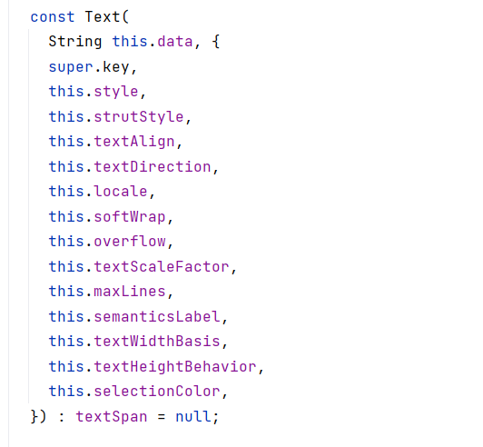

Around the year 2010, companies that made internet browsers (Microsoft, Google, Apple) realized that JavaScript was not a good programming language. It doesn't have type checking, and it's purely an interpreted language. Microsoft proposed a new language called TypeScript, which is the same as JavaScript, except it enforces strong type checking. TypeScript just gets compiled to JavaScript before it gets run in the browser.
Dart is similar to JavaScript except that it can be compiled to native code. It is also similar to Java so it should be easy to learn for those who already know it. Google has further developed the language as the basis for Flutter, which allows Dart to be transpiled to other languages.
Like with Java, you first write the variable type (int, float, double, boolean) followed by the variable name:
int age; bool done = false; // In Dart, boolean is called bool float pi = 3.14;
However, if you are going to initialize a variable to an initial value, then you can just write var and the compiler will make the variable type to be what it is first equal to:
var done = false; //false is bool var pi = 3.14; // This is a double var age = 50; // This is an int
If you don't want the variable to ever change, meaning that it will always be what it was first initialized to, then you can use const instead of var.
const PI = 3.14; const URL = "http://www.google.com";
Dart introduces a term called Nullable, meaning that the variable can be equal to null, meaning that it's not really an object. If an variable is not nullable, then you can never set it to null:
String name = "";
name = null;
To make a variable nullable, you add ? after the object type:
String? name = "";
The reason to do this is to avoid writing explicit checks for null:
if(name != null) return name.length();
can be shortened to
return name?.length;
Functions look the same as in Java:
ReturnType functionName( int a, char b, bool c){ }
If you want to call this function, you have to supply values for the 3 parameters:
functionName( 44, 'a', false)
Dart introduces an idea of named parameters. Instead of relying on the position of the parameters, int a is first in the list, so 44 is the value, you can instead link the parameter to values:
functionName( c:false, b:'a', a:44);
This way, false gets passed in as 'c', 'a' gets passed in for the parameter b, and 44 is for the parameter a.
Why would you want this? Because you can specify default values for the parameters of the function:
functionName( int a = 0, bool b = false, String name = "")
but you wrap the parameter list in braces: { }
functionName( {int a = 0, bool b = false, String name = ""})
Now you can call the function but only pass in parameters that you want to change. If you only want to change the parameter name, then just pass in the new value
functionName ( name : "Eric, a:5 );
In the code that was generated, find the file main.dart. You should find the string 'You have pushed the button this many times:' somewhere in the code. It's in a Text() widget. If you look up the constructor for a Text widget, you find this:

This means that everything in the { } is optional. If you want to change the look of the Text, you supply the style: parameter
Text('You have pushed the button this many times:', style:TextStyle( ))
Look at what the TextStyle() constructor is:
If you want to change the size, pass in a new value for the parameter fontSize:
style:TextStyle( fontSize:30 )
If you want to change the font color, give a new value for the color parameter:
style:TextStyle( fontSize:30, color:Colors.blue )
You can reverse the order of fontSize and color parameters.
style:TextStyle( color:Colors.blue, fontSize:30 )
You're used to having to recompile the code in order to make changes and see what's changed. With hot-swapping, you just save the file and the program updates without recompiling or restarting. Run the code in the browser with the new TextStyle. When it's running, change the fontSize to something else and save the file. Watch as the GUI instantly updates without restarting.
For more information, visit: https://www.adservio.fr/post/what-is-flutter-and-what-are-its-advantages